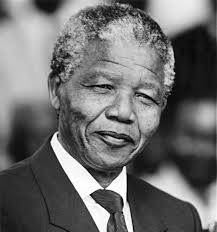

Nelson Mandela from 1918 - 2013
- 1918:
- Mandela was born on 18 July 1918 in the village of Mvezo in Umtata, then part of South Africa's Cape Province. Given the forename Rolihlahla, a Xhosa term colloquially meaning "troublemaker", in later years he became known by his clan name, Madiba. His patrilineal great-grandfather, Ngubengcuka, was king of the Thembu people in the Transkeian Territories of South Africa's modern Eastern Cape province. One of Ngubengcuka's sons, named Mandela, was Nelson's grandfather and the source of his surname. Because Mandela was the king's child by a wife of the Ixhiba clan, a so-called "Left-Hand House", the descendants of his cadet branch of the royal family were morganatic, ineligible to inherit the throne but recognised as hereditary royal councillors.
- 1934–1943:
- In 1934 he began his secondary education at Clackebury Methodist High School in Engcobo, a western-style instituition that was the largest school for black africans in Thembuland. He completed his junior Certificate in two years and in 1937 moved to Healthtown, the Methodist college in Forte Beaufort attended by Thembu royalty, including justice. In 1939 Mandela began to work on a BA degree at the University of Fort Hare, an elite black institution in Alice Easter Cape, There he studied English, anthropology, politics, native administration and roman Dutch law in his first year, desiring to become an interpreter or clerk in the Native Affairs Department. Mandela stayed in the Wesley House dormitory, befriending his own kinsman, K. D. Matanzima, as well as Oliver Tambo, who became a close friend and comrade for decades to come. He took up ballroom dancing, performed in a drama society play about Abraham Lincoln, and gave Bible classes in the local community as part of the Student Christian Association. Suspended from the university for forming a committee to challenge the second year dominance; he never returned to complete his degree. To continue his higher education, Mandela signed up to a University of South Africa correspondence course, working on his bachelor's degree at night and Passed his BA exams in early 1943 which then later moved on to follow political path rather than privy councillor in Thembuland. Between 1943 -1949 Mandela began studying law at the University of the Witwatersrand as the only black African student. During his time at the university he became increasinly politicised
- 1955–1961: Treason Trial
- After taking part in the unsuccessful protest to prevent the forced relocation of all black people from the Sophiatown suburb of Johannesburg in February 1955, Mandela concluded that violent action would prove necessary to end apartheid and white minority rule. In December 1956, Mandela was arrested alongside most of the ANC national executive, and accused of "high treason" against the state and was held in Johannesburg prison.
- Imprisonment: Arrest and Rivonia trial: 1962–1964
- On 5 August 1962, police captured Mandela along with fellow activist Cecil Williams near Howick. Jailed in Johannesburg's Marshall Square prison, Mandela was charged with inciting workers' strikes and leaving the country without permission. His hearing began in October, but he disrupted proceedings by wearing a traditional kaross, refusing to call any witnesses, and turning his plea of mitigation into a political speech. Found guilty, he was sentenced to five years' imprisonment. In 1964–1982 Mandela and his co-accused were transferred from Pretoria to the prison on Robben Island, remaining there for the next 18 years. Isolated from non-political prisoners in Section B, Mandela was imprisoned in a damp concrete cell measuring 8 feet (2.4 m) by 7 feet (2.1 m), with a straw mat on which to sleep. In April 1982, Mandela was transferred to Pollsmoor Prison in Tokai, Cape Town, along with senior ANC leaders Walter Sisulu, Andrew Mlangeni, Ahmed Kathrada, and Raymond Mhlaba; they believed that they were being isolated to remove their influence on younger activists at Robben Island.
- 1994–1999: Meet the President
- The newly elected National Assembly's first act was to formally elect Mandela as South Africa's first black chief executive. His inauguration took place in Pretoria on 10 May 1994, televised to a billion viewers globally. The event was attended by four thousand guests, including world leaders from a wide range of geographic and ideological backgrounds.
- 1999 - 2004: Retirement and Continued activism and philanthropy
- Retiring in June 1999, Mandela aimed to lead a quiet family life, divided between Johannesburg and Qunu. Mandela found such seclusion difficult and reverted to a busy public life involving daily programme of tasks, meetings with world leaders and celebrities, and—when in Johannesburg—working with the Nelson Mandela Foundation. In 2002, Mandela inaugurated the Nelson Mandela Annual Lecture, and in 2003 the Mandela Rhodes Foundation was created at Rhodes House, University of Oxford, to provide postgraduate scholarships to African students. These projects were followed by the Nelson Mandela Centre of Memory and the 46664 campaign against HIV/AIDS.
- 2004 - 2013: Retiring from Retirement
- In June 2004, aged 85 and amid failing health, Mandela announced that he was "retiring from retirement" and retreating from public life, remarking, "Don't call me, I will call you."
- 2011 - 2013: Illness and Death
- In February 2011, Mandela was briefly hospitalised with a respiratory infection, attracting international attention,before being re-admitted for a lung infection and gallstone removal in December 2012. After a successful medical procedure in early March 2013, his lung infection recurred and he was briefly hospitalised in Pretoria. In June 2013, his lung infection worsened and he was readmitted to a Pretoria hospital in serious condition, later was discharged in September with condition remained unstabled and died on 5 December 2013 at the age of 95.
"I have fought against white domination, and I have fought against black domination. I have cherished the ideal of a democratic and free society in which all persons will live together in harmony and with equal opportunities. It is an ideal which I hope to live for and to see realised. But if it needs be, it is an ideal for which I am prepared to die". Nelson Mandela.